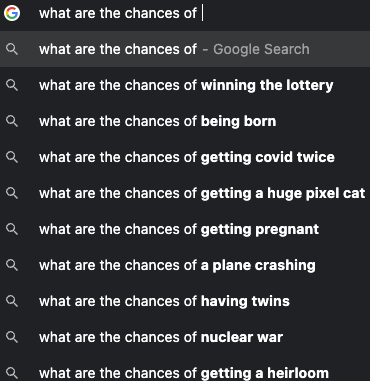

Probability and Statistics 🎲
MATH/COSC 3570 Introduction to Data Science


Normal (Gaussian) Distribution \(N(\mu, \sigma^2)\)
- Density curve

Draw Random Values from \(N(\mu, \sigma^2)\)
-
rnorm(n, mean, sd): Draw \(n\) observations from a normal distribution with meanmeanand standard deviationsd.
- \(100\) random draws from \(N(0, 1)\)

Histogram of Normal Data (n = 20)

Histogram of Normal Data (n = 200)

Histogram of Normal Data (n = 5000)

Compute Normal Probabilities
-
dnorm(x, mean, sd)to compute the density value \(f(x)\) (NOT probability) -
pnorm(q, mean, sd)to compute \(P(X \leq q)\) -
pnorm(q, mean, sd, lower.tail = FALSE)to compute \(P(X > q)\) -
pnorm(q2, mean, sd) - pnorm(q1, mean, sd)to compute \(P(q_1\leq X \leq q_2)\)

Normal Curve

Probability vs. Statistics
- Probability : We know the process generating the data and are interested in properties of observations.
- Statistics : We observed the data (sample) and are interested in determining what is the process generating the data (population).

Point Estimates Are Not Enough
If you want to estimate \(\mu\), do you prefer to report a range of values the parameter might be in, or a single estimate like \(\overline{x}\)?
If you want to catch a fish, do you prefer a spear or a net?


- Due to variation of \(\overline{X}\), if we report a point estimate \(\overline{x}\), we probably won’t hit the exact \(\mu\).
- If we report a range of plausible values, we have a better shot at capturing the parameter!
Confidence Intervals
A plausible range of values for \(\mu\) is called a confidence interval (CI).
Do we know the sampling distribution of \(\overline{X}\)?
- Central Limit Theorem: \(\overline{X} \sim N(\mu, \frac{\sigma^2}{n})\) regardless of what the population distribution is.

95% Confidence Interval Simulation
\(X_1, \dots, X_n \sim N(\mu, \sigma^2)\) where \(\mu = 120\) and \(\sigma = 5\).

Simulate 100 CIs for \(\mu\) when \(\sigma\) is known
Algorithm
- Generate 100 sampled data of size \(n\): \((x_1^1, x_2^1, \dots, x_n^1), \dots (x_1^{100}, x_2^{100}, \dots, x_n^{100})\), where \(x_i^m \sim N(\mu, \sigma^2)\).
- Obtain 100 sample means \((\overline{x}^1, \dots, \overline{x}^{100})\).
- For each \(m = 1, 2, \dots, 100\), compute the corresponding confidence interval \[\left(\overline{x}^m - z_{\alpha/2} \frac{\sigma}{\sqrt{n}}, \overline{x}^m + z_{\alpha/2}\frac{\sigma}{\sqrt{n}}\right)\]

mu <- 120; sig <- 5
al <- 0.05; M <- 100; n <- 16
set.seed(2024)
x_rep <- replicate(M, rnorm(n, mu, sig))
xbar_rep <- apply(x_rep, 2, mean)
E <- qnorm(p = 1 - al / 2) * sig / sqrt(n)
ci_lwr <- xbar_rep - E
ci_upr <- xbar_rep + E
plot(NULL, xlim = range(c(ci_lwr, ci_upr)), ylim = c(0, 100),
xlab = "95% CI", ylab = "Sample", las = 1)
mu_out <- (mu < ci_lwr | mu > ci_upr)
segments(x0 = ci_lwr, y0 = 1:M, x1 = ci_upr, col = "navy", lwd = 2)
segments(x0 = ci_lwr[mu_out], y0 = (1:M)[mu_out], x1 = ci_upr[mu_out], col = 2, lwd = 2)
abline(v = mu, col = "#FFCC00", lwd = 2)

Normal Curve Plotting